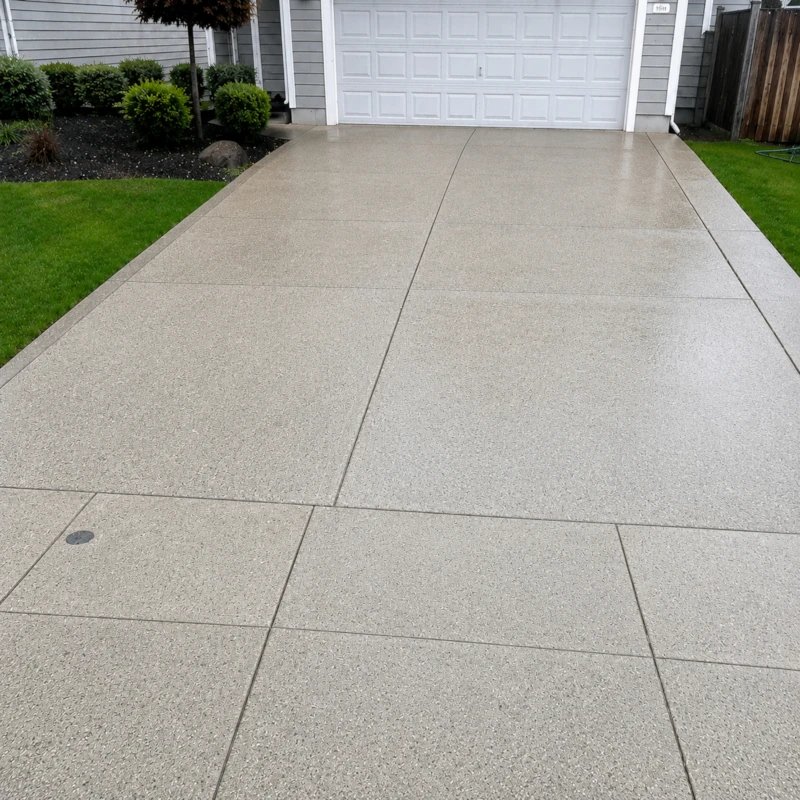
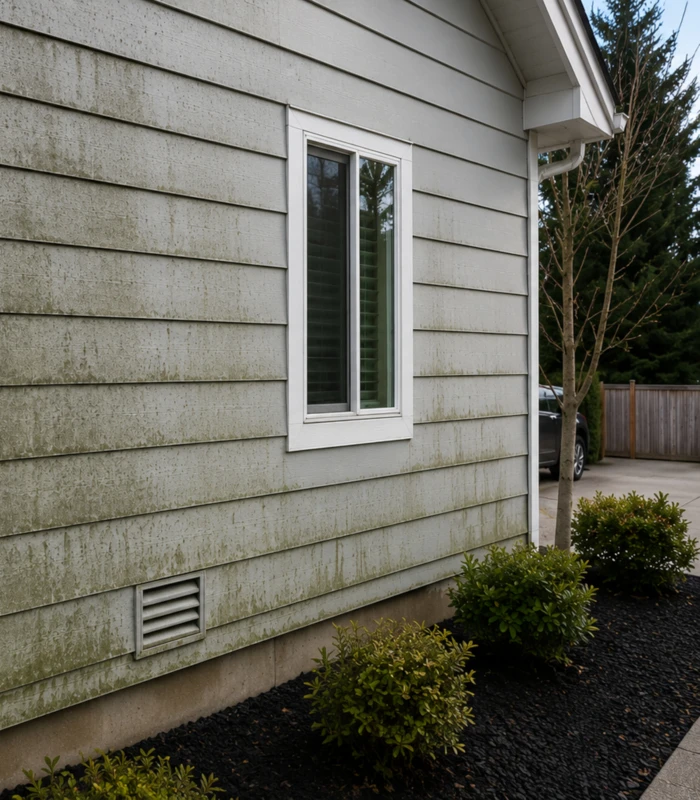
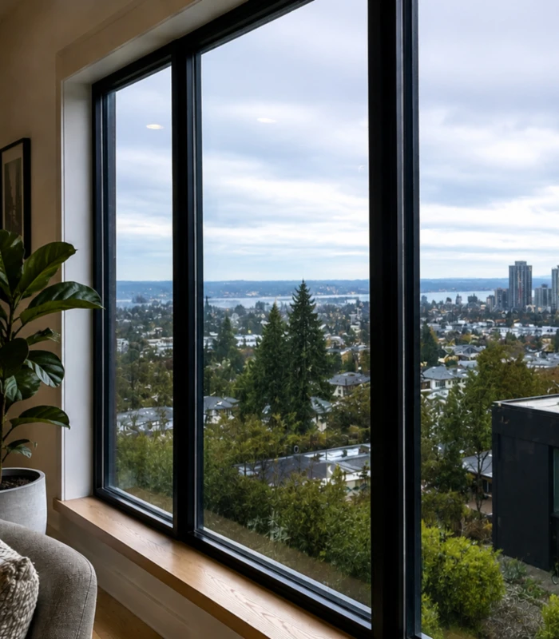
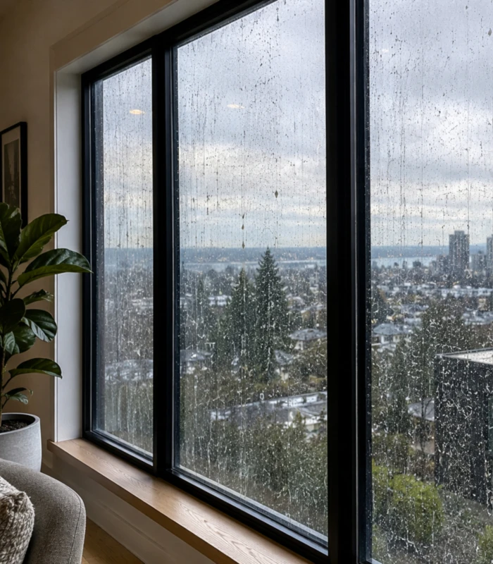
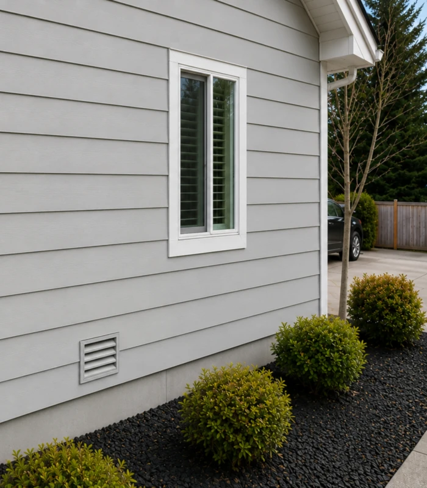
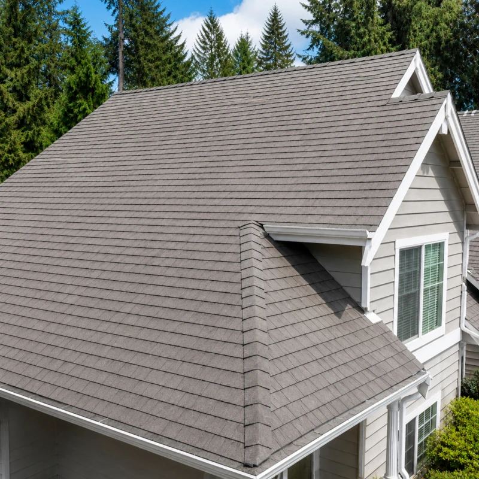
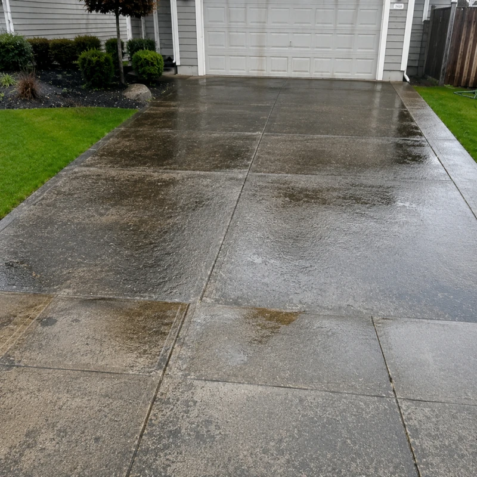
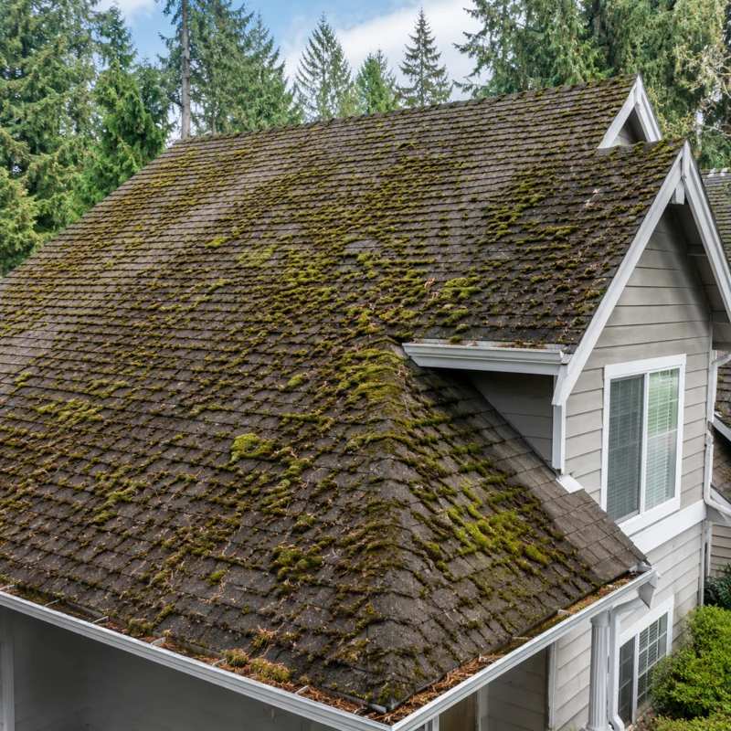

Professional window cleaning, pressure washing, soft washing and roof surface care for Seattle homes and businesses.
Fully insured · Mon–Fri 8–7 · Sat 9–3
Residential and commercial exterior cleaning, done with honesty and care.
Interior and exterior glass cleaning that removes haze, fingerprints and buildup.
Driveways, patios, walkways and hard surfaces brought back to life.
Low-pressure washing for siding, trim and delicate exterior materials.
Removes moss, streaks and seasonal debris safely.
Residue-free cleaning to support better light absorption.
Storefront windows, building washing, parking lots and sidewalks.
A look at the Aloha Window & Exterior Wash experience.








Aloha is new, and it comes from the same family as THA House Cleaning. These ratings belong to THA House Cleaning, not to Aloha.
Our sister company THA House Cleaning takes care of the inside. Ask us about bundling interior and exterior care.
Ask about referralsWe're based at 3400 Harbor Ave SW in Seattle and serve Seattle-area homes and businesses.
Yes, Aloha is fully insured.
Soft washing uses low pressure made for siding, trim and delicate materials.
Yes. Pairing services like window cleaning plus pressure washing saves 5%, and new customers get $50 off their first cleaning.
Mon–Fri 8 AM–7 PM, Saturday 9 AM–3 PM, closed Sunday.